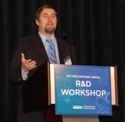
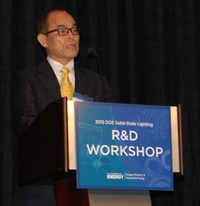
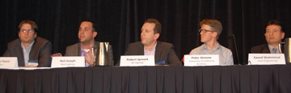
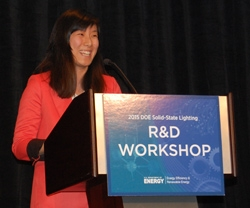
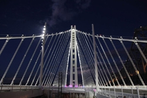
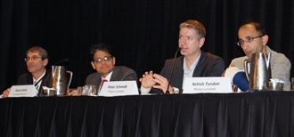
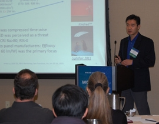
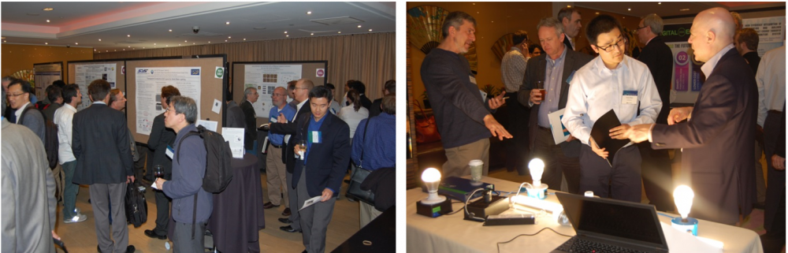

Nearly 300 researchers, manufacturers, and other industry insiders and observers gathered in San Francisco January 27–29, 2015, to participate in DOE's 12th annual Solid-State Lighting (SSL) R&D Workshop.
Mike Carr, Senior Advisor and Principal Deputy Assistant Secretary of DOE's Office of Energy Efficiency and Renewable Energy, gave the keynote address. Noting that SSL is a key component of our nation's climate-change solutions, he observed that it's already having an impact, and that the 200+ DOE-funded R&D projects have resulted in more than 245 patents and yielded about $2.8 billion in U.S. energy savings over the past 11 years. This represents a remarkable return on the total DOE SSL program investment of $300 million over that same period. But Carr said that what SSL has achieved so far pales in comparison to its potential of saving 4,060 tBtu, or about $39 billion, annually. "This is the time to take the next great leap forward, technologically,” he stated.
Opening remarks were delivered by 2014 physics Nobel laureate Shuji Nakamura of the University of California, Santa Barbara (UCSB). He recalled that when he started his work a quarter-century ago, "no one thought it would bring about a lighting revolution,” but he remarked that the many LED lighting products on the market today are "just the first generation.” Nakamura discussed his work with GaN-on-GaN devices, noting that he and his colleagues at UCSB are now investigating generation three. He envisioned that laser diodes—which aren't subject to droop the way LEDs are and thus have the potential to be even more efficient—will eventually play a role in lighting.
DOE SSL Program Manager James Brodrick remarked that recent news headlines underscore the profound impact solid-state lighting is having on the world. He cited recent high-profile applications, such as retrofitting the Vatican's famed Sistine Chapel, and noted that 2015 has been declared the International Year of Light to emphasize how, nowadays, lighting is doing much more than merely illuminating a space. Brodrick highlighted the "massive" potential energy savings from SSL, noting that "the energy savings we've achieved so far are just a drop in the bucket.” He remarked that there are a lot of innovative LED lighting products yet to come.
REINVENTING LIGHTING
Remarking that innovation requires a great deal of capital, Cree co-founder John Edmond noted that his company's R&D efforts are aimed at improvements in every aspect—from design and materials to manufacturing—in order to reduce the cost of LED lighting products. He said that being vertically integrated is a big advantage because it allows Cree to optimize every step of the way. Edmond observed that LED state of the art is now at about 80% power efficiency, and noted that it takes about three years to get from the R&D stage to production, and that Cree has achieved just over 250 lm/W in the lab, so DOE's target of 250 lm/W isn't far off. Edmond said his company undergoes an evolution in the platform for the different LED components every three years or so.
John Davidson of Walmart recounted how LEDs have become an integral part of the energy-efficiency model for his company's stores. He noted that Walmart was an pioneer in implementing LED lighting and established a rigorous process for concept, testing, pilot, and eventual rollout. For this retail giant, sustainability goals must be met by an acceptable return on investment, and Davidson noted that often, the energy savings from LED lighting were coupled with notable savings in maintenance costs. Walmart plans to outfit all new stores in the U.S., Asia, Latin America, and the U.K. with LED ceiling lighting fixtures, saving a projected 620 million KWh over the next 10 years in the U.S. alone.
SSL pioneer George Craford of Philips Lumileds reviewed the history of LED lighting up till now, with an eye toward lessons for today; considered where the technology currently is, and what the emerging trends are; and looked to what's next in SSL innovation. Stating that "LEDs are clearly going to replace conventional lighting,” he cited droop and the green gap as immediate challenges and observed that LED performance appears to be moving from revolutionary to evolutionary improvement. After decades of focus primarily on lm/W and lm/$, Craford said, application-specific packaging has become a third area of focus for innovation. He stated that future design concepts and applications, often including "smart" lighting, will revolutionize lighting in ways that are impossible to predict today.
Biing-Jye (BJ) Lee of Epistar offered a global perspective on LED manufacturing, the evolution of LED technology, and the use of mid-power and high-power LEDs in lighting. He stated that the growth of the global LED market will be driven by general illumination and automotive lighting over the next few years, and that the challenges of performance improvement and cost reduction will drive innovations in chip and package design. Lee observed that mid-power LED chips and packages have achieved good lm/$ and good lm/W and have become mainstream in various lighting applications. He stated that driver-on-board and chip-scale-package LEDs can speed SSL's market penetration, high-voltage LEDs could be an important solution for many lighting applications, and SSL manufacturing in the U.S. is now economically feasible.
NEW DIRECTIONS IN LIGHTING
Next came a panel on new directions in lighting, moderated by Steve Bland of SB Consulting, who set the stage by noting that "we're just scratching the surface of what we can do with SSL.” Panelist Saeed Shahmirzai of Zoon Engineering discussed the recent LED installation on the new East Span of the San Francisco Bay Bridge. He described how more than 1,500 fixtures containing a total of over 48,000 individual LEDs were installed on 273 light poles, which were restricted to one side of the roadway. Shahmirzai explained that glare to oncoming traffic, and light pollution into the bay, were concerns, which the LED system addressed by providing precise light control. He described how the manufacturer did a mockup of the system beforehand, and how the results of a computerized lighting study were verified by real-world testing. The new lighting system is up to 65% more efficient than a conventional system and has a life span of 10 to 15 years, compared to only two to three years.
Peter Alstone, a graduate student in energy research at the University of California, Berkeley, discussed the inexpensive solar-powered portable LED lights that are being provided at a very low cost through the nonprofit organization Lighting Global to low-income people who have no access to electricity. He noted that 1.3 billion people in the world don't have access to the electricity grid and thus are forced to resort to fuel-based lighting—which is expensive, unhealthy, and a major source of "black carbon”—and that such people are contributing 20% to global warming. Alstone explained that the goal of Lighting Global is to reduce the number of those people to zero by the year 2030.
Robert Spivock of GE Lighting described how LEDs are being used to address the issue of finding ways to feed the world's soaring populations. He explained that LEDs are enabling the efficient growth of food crops in huge indoor facilities in regions where sufficient outdoor fields are unavailable, and noted that the kind of light a plant responds to best shifts over the course of the year, with infrared favored in the spring, bluer light in the summer, and redder light in the fall. Spivock recounted how a 25,000-square-foot indoor plant-growing facility in Japan—which features 17,000 LED fixtures arrayed on 18 racks, each with 15 levels—produces 10,000 heads of lettuce per day (100 times more than would be produced outside), grows them 2.5 times faster than outside, and uses 1% of the water that would be required outside. "The future is today for horticulture lighting,” he said.
Neil Joseph of Stack Lighting exhibited his company's responsive Alba lightbulb, which includes integrated sensors and controls that allow it to respond to ambient conditions, such as the level of occupancy in the room and how much ambient light there is. He called such lighting "responsive" as opposed to "connected,” and said it's "the next stage beyond smart lighting.” Joseph reviewed the three main elements that are needed for responsive lighting: sensor technology, a simple setup, and a seamless user experience. He also went over the major challenges involved, which include heat management, coping with electrical noise, finding effective sensors, and developing wireless standards.
George Yianni of Philips talked about his company's color-tunable hue bulb, which already has 230 apps that have been created by users to allow them to interact with and use light in novel ways. He noted that the hue bulb can achieve any shade of white, or any color, and can be controlled in many different ways. Yianni focused on four benefits of the hue, the most obvious being the creation of ambience. But providing the right kind of light, Yianni said, can also have biological benefits, such as improved focus and sleep-wake cycle. And it can also, he noted, provide "soft security”—for example, by having the lights in a house come on before the occupant enters—and can serve as a gentle reminder (e.g., to wake up or to join a conference call). "This is what the Internet of Things is all about,” Yianni said.
CREATING VALUE THROUGH CONTROLS
A panel of speakers, moderated by Monica Hansen of LED Lighting Advisors, discussed the ways in which SSL, mobile devices, and advanced electronics and sensors will enable completely new ways to control lighting and increase its value to consumers. Noting that occupancy sensors, daylight sensors, and personal and wall controls are in common use today and, in some cases, are even required by code, Ethan Biery of Lutron explained that future sensors that currently are either in the R&D stage or already in trial installations include presence detectors (video-based occupancy sensors), air or component temperature sensors (in the fixtures), and air quality sensors. He observed that occupancy/vacancy sensing can cut energy costs by 20–60%, personal dimming controls by 10–20%, and daylight harvesting by 25–60%. Biery also cited research suggesting that the use of controls can increase worker productivity. He reviewed the benefits and challenges of the various wired and wireless control technologies in use today.
Konstantinos Papamichael of the University of California, Davis, talked about adaptive lighting, which he called "the future of lighting.” He explained that adaptive lighting provides the right light—in terms of its spectral power distribution (SPD)—where and when it's needed, with the "when" referring to environmental conditions. Papamichael noted that SSL can yield any SPD desired, and that optics can modify that light to provide any candlepower distribution (CPD) needed. Thus, he said, adaptive lighting systems automatically can adjust their SPD and CPD based on environmental conditions such as occupancy/vacancy, daylight availability, and demand response signals, to optimize space and building performance (i.e., to maximize comfort, minimize energy requirements, and minimize peak electricity demand).
Dan Ryan of Bytelight talked about the use of LED lighting for indoor locations, which he noted is a fast-growing in-store technology that's already being explored by half of the top 100 U.S. retailers in order to increase in-store sales, optimize in-store operations, and capture brand dollars. Ryan observed that lighting is uniquely positioned to deliver indoor location data with a high degree of accuracy, on a massive scale, at low cost. The way it works, he explained, is that beacon-enabled light broadcasts location information that's picked up by shoppers' smartphone apps, triggering the delivery of targeted content. Ryan said the ultimate impact will be to shrink the return on investment for LED lighting systems and thus speed adoption.
Nan Zhao, a Media Lab graduate student at the Massachusetts Institute of Technology, talked about the research she and her colleagues are doing on using sensor networks for lighting control. One example involves developing a personal pointer that's worn as a wristband and can recognize different gestures and measure the hand's orientation, thus enabling the wearer to control the lights by means of moving the hand and arm. Another example Zhao described involves modifying Google Glass to detect light levels right at the eye, thus enabling the lights to respond to where the person looks and what he or she sees.
WORKSHOP MISSION
Morgan Pattison of SSLS, Inc., wrapped up the first day with an overview of the purpose of the DOE SSL R&D workshops. He outlined the DOE SSL R&D planning process and shared highlights from an LED roundtable and an OLED meeting, both of which were held in the fall of 2014 to flag basic science challenges and priority needs that will be discussed in depth in the workshop breakout sessions to come. Pattison noted that in keeping with the continuing evolution of DOE's SSL program, this year DOE has consolidated its two annual SSL R&D workshops—which had resulted in two separate planning documents, the Multi-Year Program Plan (MYPP) and the Manufacturing Roadmap—into a single R&D workshop and planning document (the SSL R&D Plan). He encouraged the attendees to provide feedback that will help DOE update its R&D efforts.
An optional evening bus tour enabled attendees to experience the lighting on the Bay Bridge's new East Span connecting San Francisco and Oakland, and also to visit Acuity Brands' west coast training center, the Center for Light&Space in Berkeley. In addition to being a true engineering feat on its own, builders of the East Span faced a number of lighting challenges, including difficult installation, with main cable fixtures up to 300 feet above the deck, tight uniformity requirements and strict diffusion criteria, and pole coverage of up to 12,000 square feet. The 273 massive steel light poles were restricted to one side of the roadway and range in size from 23 to 65 feet tall and weigh between 2,500 to 7,500 pounds. The bridge is lit by a total of 1,521 fixtures, each containing 25 to 50 LEDs, for a total of more than 48,000 LEDs in the system. Compared to traditional lighting, the LEDs installed are up to 65% more efficient, with a 10- to 15-year life span (vs. 2- to 3-year) and a 10-year parts and labor warranty from the manufacturer. In Berkeley, Acuity Brands' Center for Light&Space is home to the company's OLED Business Group and Peerless lighting team. At this stop, attendees saw outdoor and indoor LED lighting installed in demonstration vignettes, as well as four commercial OLED product families with a range of efficacies, CRIs, and CCTs. Acuity experts described how customer feedback has shaped new product designs for LEDs, and provided a peek at OLED product concepts and luminaires under development.
GLOBAL LIGHTING TRENDS AND MANUFACTURER STRATEGIES
Day 2 began with Roger Chu of LEDinside discussing how Asian LED manufacturers are bringing about an era of low-priced lighting. He noted that the global high-brightness LED market is projected to reach $14.5 billion in 2014, and that lighting has become the largest LED application, with mid-power LEDs already having become mainstream. Chu observed that the rise of Asian lighting producers has brought intense competition, and that traditional lighting firms have started to plot new strategies to correspond to the change. He said that because the LED industry is suffering from oversupply issues, LED companies continue to go out of business and are being merged, and that lighting manufacturers are implementing various low-pricing strategies to meet market demands, as competition intensifies and the industry enters a low-pricing era.
Brodrick then presented an overview of DOE SSL R&D portfolio funding and current areas of focus. He observed that DOE has funded more than 200 SSL R&D projects since 2003, and noted that in 2013, LED lighting saved 188 tBtu, equivalent to annual energy cost savings of roughly $1.8 billion. Brodrick reviewed DOE-funded SSL R&D highlights for FY14, and noted that DOE's funding opportunity announcement for FY15 covers core technology research, product development, and manufacturing R&D under a single funding opportunity announcement. He gave special recognition to the Next Generation Lighting Industry Alliance's (NGLIA) LED Systems Reliability Consortium (LSRC) and its members, and expressed his appreciation of Fred Welsh, who has led the LSRC and is retiring.
LED TRACK SESSIONS
A panel moderated by Monica Hansen of LED Lighting Advisors explored the latest findings on LED component and system reliability and future areas of focus. Ralph Tuttle of Cree considered LED package reliability from the standpoint of color-point stability. Observing that color shift can occur with LEDs and that no type of light source is perfect, he explained that color-point stability characteristics depend on the materials used in LED package construction, and that there is no method currently available to project color shift. Tuttle pointed out, though, that the color-point stability of many of today's LED lighting products is acceptable for a number of applications. Lynn Davis of RTI International reviewed the results of accelerated life testing for SSL luminaire electronics. Observing that overstress or manufacturing defects can cause any electronic component to fail, he noted that driver-related failures dominated compared with LED-related failures, and that some driver components leave visible evidence of failure, while others don't. He explained that full failure analysis is required to understand the cause of failure, especially in multi-component failure cascades. Bob Davis of Pacific Northwest National Laboratory discussed two long-term field evaluations of LED luminaires, one at the I-35W Bridge in Minneapolis and the other involving border patrol lighting in Yuma, AZ. In Yuma, the benefits included huge energy savings, reduction in light pollution, improved uniformity, and decreased maintenance costs, with no failures through the first year. The I-35W Bridge is one of the country's oldest exterior LED installations in continuous operation and was implemented in 2008. Although the bridge's LED luminaires represent a very early state of the art for the technology, overall they were found to still be effective in 2013, exhibiting comparatively reliable performance relative to a conventional high-pressure sodium baseline and still providing value.
A panel moderated by Morgan Pattison looked at different approaches for improving the red emissions in LED lighting systems. Ashish Tandon of Philips Lumileds discussed aluminum indium gallium phosphide (AlInGaP) vertically injected thin-film (VTF) LED architectures. He observed that the advantages include multiple wavelength capability for a wide range of applications, narrow emission linewidth, no energy loss from Stokes shift, better color tuning in mixed systems, lower cost, and color stability. Among the disadvantages Tandon noted are that such an architecture has a lower hot/cold factor than indium gallium nitride (InGaN) LEDs and, in hybrid systems, needs good color mixing optics and multiple driver channels, which increases driver complexity. Peter Schmidt of Philips Lumileds discussed the use of narrowband nitride phosphors. He said that a type of nitride phosphor known as SLA (strontium lithium aluminate) is the first member of the new class of high-efficiency narrowband red-emitting nitride phosphors showing much narrower linewidths of red nitride phosphors in the market, but that more research is needed to identify red emitters with shorter wavelength emission, to maximize luminous efficacy of radiation (LER) gains. Anant Setlur of GE Global Research discussed his company's new Trigain™ LED phosphor system, which uses red Mn4+-doped complex fluorides. The new red phosphor known as PFS (for its constituents potassium, fluoride, and silicon) emits at a peak wavelength of 631 nm with a linewidth of about 2 nm. Setlur said that numerous synthesis and composition improvements have been made in order to meet various requirements (such as good reliability in medium-power LED packages), and that research is underway to accelerate implementation across different LED systems. He noted that materials synthesis challenges are being addressed through careful controls and preventative safety procedures. Keith Kahen of Lumisyn talked about the use of narrow red-emitting cadmium-free nanocrystals (sometime referred to as quantum dots). He noted that in 2014, he and his colleagues made significant progress in narrowing the spectral width of the red emitters of these nanocrystals, with the best ones having widths of ~54 nm, and that they continue to make good progress in raising the quantum efficacy of the narrower reds up to the levels of their standard green and red emitters. Kahen said they're on track to achieve high-performance cadmium-free red emitters with spectral widths of 35–40 nm within the next 18 months.
A panel moderated by Steve Bland of SB Consulting explored the development of new materials and architectures for improved performance and functionality in various areas of the LED package and luminaire system. Eric Haugaard of Cree considered what the products of the future will look like, asserted that there will be a trend toward component and process consolidation for greater overall value, and discussed the issue of serviceability. He also covered a cost breakdown for LEDs, as well as challenges and opportunities related to the optical and luminaire housing materials. In addition, Haugaard delved into the value evolution of packaged LEDs, noted that increasing LED performance reduces cost, and observed that thermal value opportunities have changed. Ravi Bhatkal of Alpha discussed the use of high-operating-temperature sintered silver interconnects for LED applications, which he said can improve system costs by facilitating processing at low temperatures. Bhatkal noted that electronic and thermal interconnects are present in all levels of LED manufacturing and are critical for efficient, reliable conveyance of power, information, and heat, but that traditional solder alloys were not designed for high-temperature operating conditions where thermomechanical fatigue is the dominant failure mechanism. He said that emerging technologies in solder alloys and sintered materials are beginning to address this issue. Joel McDonald of Dow Corning discussed advanced silicone materials for LED lighting. He said his company has developed a solid silicone encapsulant that delivers thermal stability compared with conventional silicones but is still researching phosphor integration at the macro, micro, and nano levels. Regarding higher refractive index materials, McDonald stated that stable performance from phenyl silicones is anticipated at n=1.6, and that alternative routes are being explored. He said Dow Corning has developed a portfolio of silicones for secondary optics, with the goal of enabling customers' expectations for performance and function. Marc Huebner of Auer Lighting discussed long-lasting glass optics for LED devices. He said LEDs have reached efficiency and flux levels that qualify them for high power applications, but deploying them in advanced systems/luminaires requires appropriate material engineering. Huebner noted that while some materials show severe disadvantages such as thermal aging and sensitivity to chemicals, glass is durable, versatile in shape, has no temperature problems, is easily coatable and cleanable, and can reach competitive pricing levels.
Another panel moderated by Steve Bland examined ongoing challenges for LED lighting, and what's needed to develop next-generation lighting. Jakoah Brgoch of the University of Houston discussed targeting high-efficiency phosphors via informatics. Describing a more efficient method to identify new phosphor hosts, he observed that the quantum yield of Ce3+ phosphors follows the Debye temperature, and that plotting Debye temperature against band-gap can be used as a first step in identifying compounds that have the optimal properties. Peter Blais of Kemet talked about electrical components, focusing on capacitors. Noting that the most common technology used for bulk capacitance in LED lighting is aluminum electrolytics, he discussed film capacitors and multilayer ceramic capacitors as well as tantalum polymer construction, and also considered voltage derating guidelines. Steve DenBaars of the University of California, Santa Barbara, identified current droop and thermal droop as the two biggest drawbacks of white LEDs. He considered the growth of quantum well device structures on nonpolar and semipolar GaN crystal planes as possible solutions, and reviewed the various benefits. DenBaars then discussed laser-based white lighting, noting that laser diodes—which he called the light source of the future—are droop-free across a wider  current range than LEDs. He reviewed the limitations of laser-based lighting, including the development of suitable phosphors. Nathan Gardner of Glo-USA discussed research being done on longer-wavelength green, amber, and red emitter materials. He noted that the use of AlInGaP lattice matched to GaAs results in a fundamental energy-band problem for red and amber LEDs, which severely impacts thermal stability and power conversion efficiency (PCE). The use of InGaN eliminated the energy-band problem but introduced materials growth problems associated with the higher indium content and increased strain. Gardner discussed possible solutions, including growth on non-polar planes, growth on "foreign" engineered substrates, and the use of nanowire LEDs.
current range than LEDs. He reviewed the limitations of laser-based lighting, including the development of suitable phosphors. Nathan Gardner of Glo-USA discussed research being done on longer-wavelength green, amber, and red emitter materials. He noted that the use of AlInGaP lattice matched to GaAs results in a fundamental energy-band problem for red and amber LEDs, which severely impacts thermal stability and power conversion efficiency (PCE). The use of InGaN eliminated the energy-band problem but introduced materials growth problems associated with the higher indium content and increased strain. Gardner discussed possible solutions, including growth on non-polar planes, growth on "foreign" engineered substrates, and the use of nanowire LEDs.
On Day 3, LED attendees split up into small groups to discuss a variety of topics considered key to furthering SSL technology advances, with each table focusing on a specific R&D topic to allow for in-depth consideration of related issues.
OLED TRACK SESSIONS
A panel gave an overview of OLED technology progress and took a look at early markets for OLED products. Norman Bardsley of Bardsley Consulting discussed progress made in 2014 and challenges to be faced in 2015. He noted that a lot more has been learned about price, and that there have been substantial price reductions as well as the development of retail channels for OLED lighting products. Bardsley observed that the 60 lm/W efficacy achieved by some OLED products is okay for many applications, although some products are still below 20 lm/W. He said lifetime and color quality are fine, but the shelf life of flexible OLED panels is yet to be tested, beam-angle control is nearly nonexistent, and light trapping needs work. The priorities for the industry, Bardsley said, are to reduce costs, be realistic about market expectations, develop attributes, and work together. Mike Lu of Acuity Brands reviewed his company's roadmap for OLED lighting products, noting that the focus is back on efficacy, but that this is only possible because quality issues have first been addressed. He expressed confidence that Acuity Brands will achieve 80 lm/W in OLED lighting products later in 2015, and he noted that his company's OLED lighting products are now offered by The Home Depot online and in one of its stores.
A panel moderated by Lisa Pattison of SSLS, Inc., looked at open science questions related to designing the organic stack, as well as at issues surrounding charge injection and losses in the transport layers and emitter host materials. Floryan De Campo of Solvay talked about hole injection layer (HIL) development opportunities. He noted that the benefits of incorporating HILs into OLED devices include better device efficiency, significant lifetime improvements, and in some cases improved manufacturing yields due to the planarization capabilities of thick HILs. De Campo discussed key parameters for high-performance HILs—stability, control of interfaces, and intractability to prevent diffusion of harmful species through the organic layers. He said Solvay's current focus is on non-aqueous, solvent-based HILs for intractable systems that are robust and easy to reformulate. Michele Ricks of EMD Chemicals discussed materials development for OLED lighting. She pointed out that OLED lighting manufacturers have naturally relied on materials developed specifically for the display industry, though the needs for OLED lighting are somewhat different. Materials for OLED lighting could be optimized by tailoring the emission spectrum to achieve improvements in color quality and efficacy. For instance, deep-blue emitters are required for displays, but most lighting architectures would benefit from a lighter broad blue. Likewise, color quality of OLEDs could be improved through the design of red emitters with emission profiles extending into the longer wavelengths to enhance the R9 value, and efficacy and color quality improvements could be realized with amber emitters and hosts that are well matched to the blues. Other areas of opportunity include p- and n-dopants for charge-generation layers that are required for tandem stacked architectures, and solution-processed HILs that are compatible with vacuum-processed devices. Junji Adachi of Kyushu University talked about high-performance thermally activated delayed fluorescence (TADF) for OLEDs. He discussed molecular design for high-efficiency TADF and its application in OLEDs for lighting. Though the internal quantum efficiency (IQE) is typically considered to be limited to 25% (which corresponds to the percentage of singlet states) in fluorescent emitter systems, the TADF approach can yield devices with nearly 100% IQE. By reducing the energy gap between singlet and triplet states, triplet states can be upconverted to singlet states, resulting in delayed fluorescence with internal quantum efficiency of nearly 100%. Adachi also presented a new route for triplet harvesting, using TADF molecules as an assistant dopant and fluorescence molecules as an emitter to achieve the long lifetimes and color purity of fluorescent emitter systems while gaining the high efficiency of TADF systems. Steve Forrest of the University of Michigan discussed phosphorescent OLEDs (PHOLEDs). He noted that excitons are responsible for ~100% IQE of PHOLEDs, but excitons are also responsible for molecular decomposition due to local energy dissipation. Forrest presented his recent results showing that extending the recombination region through dopant/host grading reduces exciton pileup, allowing his group to show a threefold improvement in lifetime for a single-stack blue device and a 10x improvement in lifetime for a stacked blue OLED device. He said that while high efficiency with long lifetime is possible through exciton management, there needs to be more focus on the host, as well as on purity. Forrest stated that under practical modes of operation, there's no fundamental reason why organics should be any less—or any more—reliable than inorganics.
Another panel moderated by Lisa Pattison explored the challenges surrounding the various components of OLED panels and their integration. This session looked at panel components other than the active layers, including substrates, light-extraction layers, anodes, and encapsulation. Dipak Chowdhury of Corning discussed integrated OLED substrates. He pointed out that only around 20% of the light generated in an OLED escapes the device, if nothing is done to facilitate light extraction—thus highlighting the importance of developing substrates with integrated light-extraction capabilities. Chowdhury reviewed the state of the art for scalable light-extraction techniques and noted the absence of a commercially available integrated-substrate product to date. He talked about the possible use of flexible glass for OLED substrates, and how Corning and others are now producing 100-micron flexible glass sheets on a manufacturing scale. Though flexible glass has advantages, such as impermeability to water and oxygen and conformability/bendability for design freedom in luminaire manufacture, it also has challenges with handling and still requires bendable encapsulation. Gregory Cooper of Pixelligent continued the discussion of light extraction for OLEDs. He reviewed current approaches to light extraction—internal light-extraction layers, external light-extraction layers, and modifications within the device and in the cathode. Cooper noted the importance of selecting manufacturable (low-cost, scalable) approaches that have low impact on the OLED stack. Pixelligent's approach is the incorporation of scatterers in a high-index or graded-index matrix to create an internal extraction layer. The high-index layer is comprised of nanoparticles in a polymer matrix. This process is highly scalable, and Pixelligent's approach allows for the best combination of light extraction and minimal impact on the device. Putting complexity into materials rather than into the manufacturing helps keep costs low, yields high, and manufacturing processes simple. Rahul Gupta of Cambrios talked about alternatives to ITO anodes and, in particular, his company's use of silver nanowire electrodes to enable flexible, transparent, and cost-effective OLED lighting. He said his company's ClearOhm transparent conductor, which consists of single crystal wires of silver from silver salts, enables cost-effective production of OLEDs, with large-size tiles without metal grids eliminating process steps. A further advantage is that the printing process for anode deposition eliminates the need for patterning by etching. Chris Brown of Kateeva discussed the use of inkjet technology for the mass production of OLEDs. He described the deposition equipment Kateeva has developed for thin-film encapsulation (TFE) and RGB patterning of display OLEDs, noting that the core technology is also applicable to OLED lighting. Brown said that his company's inkjet printing approach is a key technology for flexible OLED lighting, is well-suited for roll-to-roll processing, is cheaper than vacuum thermal evaporation, has the capability for precision patterning and support of non-square shapes, and is applicable to the organic stack, planarizing layers, light outcoupling layers, and encapsulation.
A panel moderated by Norman Bardsley examined OLED panel manufacturing status and trends, as well as what's needed for future growth. Bardsley noted that there's information available on the topic—e.g., Universal Display Corporation publishes public reports, and the OLED Association disseminates information. He said the goal for 2015 in terms of running costs is $1,000/M2 yielded, and $550/M2 unyielded. John Hamer of OLEDWorks discussed problems and opportunities in OLED lighting manufacturing. Stating that cost-competitive panels are needed in order for the industry to succeed, he noted that OLEDWorks introduced its first OLED lighting product in 2014—an amber marker light for the healthcare market—and will soon complete the commercialization of a competitive white OLED panel. Hamer reviewed the key challenges involved in manufacturing OLED lighting: reducing variability in performance, which leads to lower yield of products within specifications, which in turn leads to higher panel costs; and improving reliability, which is critical for successful market adoption. Yiqiang Zhang of Trovato Manufacturing discussed strategies for cost reduction and yield improvement. He noted that China, with 1.4 billion people, comprises a huge potential market. Stating that Trovato's manufacturing technology may help lower the cost and improve the fabrication yield for OLED lighting, Zhang emphasized the need for international collaboration to move the industry forward. Mike Mastropietro of Novacentrix gave an overview of transparent metal electrode technologies. After reviewing the major obstacles—including mesh line resolution, mesh thickness, and electric field isolation—he noted that transparent mesh electrodes allow for an improved ratio of visible light transmission to sheet resistance over indium tin oxide (ITO) and ITO-silver-ITO, can potentially lower cost, and exhibits better mechanical performance.
Another panel moderated by Lisa Pattison shared various perspectives on early markets for OLED luminaires. Melanie Kimsey-Lin of Boeing discussed aerospace applications for OLED lighting and noted that Boeing already uses LED lighting on some of its airliners and has plans to expand that usage. She said there's interest in using OLEDs for lightweight displays for the flight deck and passenger seats, as well as for smart signs and for dynamic cabin lighting. Kimsey-Lin stated that to be considered for adoption, OLED lighting has to offer similar functionality to conventional lighting, plus make good economic sense by, for example, saving weight or reducing electricity consumption—although, for marketing and branding advantages, airline companies may be willing to pay a premium for unique lighting and features that aren't available elsewhere, such as lighting that adjusts its CCT to help passengers be more comfortable on long flights. Basar Erdener of WAC Lighting described the luminaire manufacturer's ideal OLED lighting panel. He said it would be sizeable, shapeable in planar and 3-D geometries, integratable with current and future architecture, and compatible with existing infrastructure. Erdener also emphasized that it would be durable and affordable. He talked about the need for OLED-specific drivers with form factors that complement the thin, lightweight nature of OLEDs. Nancy Clanton of Clanton & Associates talked about designing with OLED lighting. She noted that what lighting designers are looking for in the products they specify is not only beauty and good performance, but also reliability and low cost, and products that are easy to control. Clanton said she and her colleagues would love to see new form factors rather than downlights or troffers. However, she said, it's important for OLED manufacturers to supply accurate data on light distribution, lifetime, color consistency, luminance, and light output, in addition to efficacy. Clanton identified color uniformity—both panel-to-panel and color shift over time—as a big concern and said that if it's not solved, OLED lighting won't succeed in the marketplace. She also cited dimming and power-quality issues as being of concern.
On Day 3, instead of splitting up into separate topic tables, OLED attendees had an opportunity for collective discussions to review R&D priorities considered key to furthering OLED technology advances.
SSL MANUFACTURING CONCEPTS
 A panel moderated by Monica Hansen examined how LED chip, package, and luminaire designs are evolving to remove costs, and also looked at trends in OLED manufacturing and the impact on U.S. competitiveness. Iain Black of Philips Lumileds noted that turnkey manufacturing for LED engines is a rapidly emerging model, which is enhanced by technology driving "level collapse.” He stated that functional integration will drive LED engine development, and as light-engine functionality increases, many manufacturing customers will move from "make" to "buy" decisions to improve ease of use, access critical technology, and enhance time to market. Black said LED engines provide an opportunity for LED manufacturers to move up the value chain, adding unique value with customized LED solutions and higher levels of integration.
A panel moderated by Monica Hansen examined how LED chip, package, and luminaire designs are evolving to remove costs, and also looked at trends in OLED manufacturing and the impact on U.S. competitiveness. Iain Black of Philips Lumileds noted that turnkey manufacturing for LED engines is a rapidly emerging model, which is enhanced by technology driving "level collapse.” He stated that functional integration will drive LED engine development, and as light-engine functionality increases, many manufacturing customers will move from "make" to "buy" decisions to improve ease of use, access critical technology, and enhance time to market. Black said LED engines provide an opportunity for LED manufacturers to move up the value chain, adding unique value with customized LED solutions and higher levels of integration.
Paul Pickard of EcoSense Lighting discussed color degradation and non-uniformity in LED lighting systems. He noted that LED color over angle is routinely inconsistent (batch to batch) and does not achieve the same uniformity as incumbent technology. He also pointed out that traditional domed LEDs suffer from color-over-angle variation due to phosphor path length differences and edge effects, and that mid-power devices are often worse. Pickard said that LED fixture manufacturers are paying LED manufacturers to focus on lm/W and lm/$, but increasingly these are not the governing factors in improved fixture cost, and that known areas of potential improvement, such as color stability, exist in LED components that can drive improved manufacturability, lower fixture costs, and better user experiences.
Mark Hand of Acuity Brands considered SSL manufacturing concepts that will allow LED and OLED luminaires to continue being manufactured in the U.S. He reviewed the disadvantages of manufacturing overseas, including longer lead time, which can result in products being too late to market; a limit to the number of SKUs that can be offered; the risk of being stuck with unsellable inventory if the market shifts; and prohibitive freight costs for large and heavy items. Hand described Acuity Brands' domestic and overseas manufacturing of LED lighting products, noting that its OLED lighting products are manufactured entirely in the U.S. He said that lean manufacturing is the key to reducing labor costs.
Pim Groen of Holst Centre discussed roll-to-roll processing as a way to cost effectively mass-produce solution-processed OLED devices. He reviewed the advantages of printing and casting over lithographic patterning—e.g., it's easier for large-scale processing, allows for patterning of fine features without complicated masks, and lowers the cost by enabling higher materials utilization. Groen discussed the processes of printing and sintering involved in roll-to-roll processing. He also described the Holst Centre's multicoat pilot production line, which utilizes a unique concept in which the web is never touched on the topside, and which makes very efficient use of cleanroom space.
A BROADER LOOK AT GOVERNMENT SUPPORT
Brodrick moderated a panel that looked at DOE support of SSL R&D efforts. Joel Chaddock of National Energy Technology Laboratory reviewed the strategy of the DOE SSL R&D program. He observed that the three R&D focus areas—Core Technology, Product Development, and Manufacturing R&D—are now addressed in a single funding opportunity, and that the Exceptional Circumstances Determination expires in 2015. Chaddock also reviewed several additional DOE-funded efforts related to SSL R&D, including projects funded under the DOE Small Business Innovation Research (SBIR) program, the Advanced Research Projects Agency–Energy (ARPA-E), the Advanced Manufacturing Office (AMO), and the Energy Frontier Research Centers (EFRCs), as well as the National Science Foundation's SBIR program.
Manny Oliver of DOE presented an overview of DOE's SBIR and Small Business Technology Transfer (STTR) Programs, which provide funding for high-risk, innovative projects. He explained that a major difference between SBIR and STTR is that the STTR requires collaboration with a research institution. Oliver reviewed the three phases of these projects, with Phase I involving feasibility and proof of concept; Phase II, continuing R&D for prototypes or processes; and Phase III, commercialization. He noted that a new Phase 0 Assistance Program has been instituted for FY15 to increase the number of responsive, high-quality proposals submitted within targeted states with historically low SBIR/STTR applications and amongst women- and minority-owned businesses nationally.
Steven Konsek of the National Science Foundation gave a presentation on the NSF's SBIR/STTR program. He noted that SBIR/STTR runs across many different federal agencies, each of which runs its own such program. Konsek described how NSF's SBIR/STTR program complements DOE's. He explained that NSF recognizes the crucial role of startups and other small businesses, and that they often face a lack of seed funding. Konsek said that with its SBIR/STTR grant program, NSF addresses this funding gap, providing grants to validate highly technical ideas, facilitate scale-up, and catalyze commercialization. "We fund innovations and technologies that have game-changing potential,” he said.
Mark Johnson of DOE discussed SSL opportunities in the AMO program. He explained that AMO's purpose is to increase U.S. manufacturing competitiveness and energy efficiency through broadly applicable efficiency technologies for energy-intensive and energy-dependent manufacturing, and through platform manufacturing innovations for advanced energy technologies. The AMO areas relevant to SSL are Efficiency in Manufacturing Processes, and Enabling Materials and Technologies for Clean Energy. "Manufacturing is risky; we focus on the technical risks related to manufacturing that might not emerge until you start doing the manufacturing,” Johnson said. He also reviewed DOE's Clean Energy Manufacturing Initiative, which cuts across different DOE programs.
Brodrick then recognized Keith Cook of Philips, who has chaired the Next Generation Lighting Industry Alliance since 2009 but is retiring, with Jeff Quinlan of Acuity Brands becoming NGLIA chair. Later that evening, researchers representing projects funded by the DOE SSL program, DOE and NSF SBIR/STTR, ARPA-E, AMO, and EFRCs presented their work at a poster session and reception sponsored by NGLIA, providing attendees with additional opportunities for discussion, information exchange, and potential partnering.

THE PHYSIOLOGICAL IMPACT OF LIGHTING
Andreas Wojtysiak of OSRAM kicked off the final day of the workshop by discussing recent European studies on the impact of LED lighting on human health and performance in a variety of usage environments. In each case, the lighting dynamics—which included the spectral power distribution—were adjusted in a way that was considered optimal for the setting. At a school, LED lighting increased the speed of accomplishing a task, and also improved concentration and reduced the error rate. In the cabin of an airliner, passengers had better hormone release in the evening, improved relaxation in the evening and night, and higher comfort levels. At a wellness hotel, guests slept better at night and were more alert in the morning. Wojtysiak described a new study that's underway at a chronic pain center.
DRIVING ADOPTION: KEY SSL TRADEOFFS
A final panel moderated by Morgan Pattison fielded questions from the audience having to do with tradeoffs between efficacy, color quality, and price, and what kind of research can improve these tradeoffs. Asked whether it's  possible to convince consumers to buy a more expensive 200 lm/W lightbulb instead of a cheaper 100 lm/W bulb, Dennis Bradley of GE Lighting said it's not. He noted that sales of incandescent bulbs increased each year until the government banned them, and that consumers say their number-one criterion is price and their number-two criterion is brightness. Asked about domestic SSL manufacturing, Bradley said that GE Lighting has made considerable investments in some of its U.S. plants, such as one in Hendersonville, NC, and that the company tries to localize its manufacturing, which he noted works very well. "Today, we can serve customers in ways we never could before. These are exciting times in lighting,” he said.
possible to convince consumers to buy a more expensive 200 lm/W lightbulb instead of a cheaper 100 lm/W bulb, Dennis Bradley of GE Lighting said it's not. He noted that sales of incandescent bulbs increased each year until the government banned them, and that consumers say their number-one criterion is price and their number-two criterion is brightness. Asked about domestic SSL manufacturing, Bradley said that GE Lighting has made considerable investments in some of its U.S. plants, such as one in Hendersonville, NC, and that the company tries to localize its manufacturing, which he noted works very well. "Today, we can serve customers in ways we never could before. These are exciting times in lighting,” he said.
Mike McGaraghan of Energy Solutions noted that while refrigerators and TVs have made tremendous gains in the last 20 years, the lightbulb hasn't. "If we want to convert people, we have to make the new technology better and give people something they like and didn't have before, and LED gives us the opportunity to do that,” he said. Asked what improvements manufacturers should make, other than those involving color quality, McGaraghan said one that comes to mind first is to "make LEDs awesome”—e.g., by having them turn the living-room wall red at the right point during an action movie. He also said manufacturers should be careful to make quality products that perform well and that don't give consumers a negative impression. In addition, McGaraghan mentioned making sure the products don't exhibit flicker, and that they dim well down to a low level.
Asked why the industry is not mitigating axial glare, Peter Ngai of Acuity Brands observed that until the introduction of SSL, glare had been one of the most important metrics of good lighting and visual comfort, but that somehow LEDs introduced a single-minded focus on energy savings. "It's about time for us to look at the other aspects of lighting that can create a great visual environment, and glare is one of the most important issues,” he said. Ngai noted that there's not that much of a difference between the cost of making a great light and a bad one, and that price depends on the demand. He said the lighting of the future will know what people want and need, and will anticipate it. "We should make light more responsive to us as human beings, rather than just a lightbulb mounted on a ceiling,” Ngai stated.
Steve Paolini of NEXT Lighting said one of the reasons price is so important to consumers is that "we haven't shown them what else they should value more than the light.” He stated that until consumers can experience lighting that's better and different from what they're used to, they won't pay more for lighting; but the lighting industry, in general, tends to be timid in that regard, and to keep producing the same kinds of products. "So we have to be willing to take risks to make new interesting products that will drive them (the customers),” Paolini said. He stated that with SSL, lighting should be able to do everything that daylight does: change its spectrum, intensity, and direction over a large CCT range. Paolini also cited data collection, location services, and the Internet of Things as being worth incorporating into SSL as value-added features.
Asked what coming breakthroughs might change the tradeoff equation, Martin Wittmann of OSRAM Opto Semiconductors said his company is working on one that involves solving the problem of efficiency droop, with good progress having been made so far. To the question of what OSRAM is doing on the package end to address some of the issues that have been discussed at the workshop, Wittmann noted that his company is trying to improve the interface between the LEDs and the fixture, to improve glare. "If we can give the optical engineer a better toolbox, it adds value,” he said. "It's really about the usable light.” When an audience member mentioned that quantum dots might be able to reduce costs, Wittman said quantum dots are something OSRAM is looking into.
Brodrick concluded the three-day workshop by thanking the attendees and speakers for their input and participation. He noted an additional DOE SSL workshop to be held in 2015 and encouraged attendees to stay apprised of DOE SSL program activities by visiting www.ssl.energy.gov.